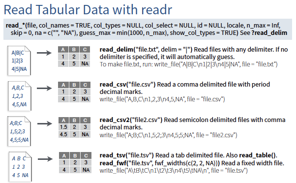
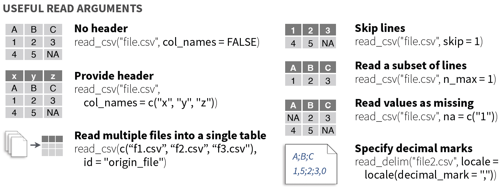
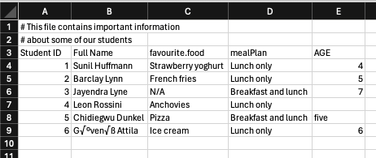

install.packages("readxl")Tidyverse 5: Reading in data
r-basics
tidyverse

1 Introduction
So far in code club this semester, all of the data we have used has been either made up by us or able to be loading from data embedded within base R or a package.
Today we are going to go over reading in external data into R. The tidyverse core package that contains functions for reading in (and writing out) data is readr and readxl allows reading in Excel data. This package allows us to read in rectangular data. Some of the material from today is adapted from a past code club by Jelmer Poelstra.
Useful references for today:
readrdocumentation (for reading in delimited files)readxldocuemtation (for reading in Excel files)- Data import with the tidyverse cheatsheet
- Data import chapter 7 in R for Data Science
There are other non-core tidyverse packages for reading in data (including directly from Google Drive), you can find them here though I will not go through them today.
We are going to use a new package today.
And then will start by loading the libraries we need for today.
library(tidyverse)
library(readxl)But before we actually read in data, let’s talk a little bit about the different ways in which input data can be formatted.
2 What are some common data formatting styles?
2.1 .csv
The most common formatting style for data is comma separated values, which often has the file extension .csv. This means that the data is delimited (i.e., separated) by commas. Often we open these files in a program like Excel, Numbers, or similar, which puts each value into its own cell, but the data actually looks like this:
Student ID,Full Name,favourite.food,mealPlan,AGE
1,Sunil Huffmann,Strawberry yoghurt,Lunch only,4
2,Barclay Lynn,French fries,Lunch only,5
3,Jayendra Lyne,N/A,Breakfast and lunch,7
4,Leon Rossini,Anchovies,Lunch only,
5,Chidiegwu Dunkel,Pizza,Breakfast and lunch,five
6,Güvenç Attila,Ice cream,Lunch only,6Here, the first row are our column headers, and each subsequent row contains information about one student, including their student ID, full name, favorite food, meal plan, and age.
If we look at this data as a table, it looks like this:
| Student ID | Full Name | favourite.food | mealPlan | AGE |
|---|---|---|---|---|
| 1 | Sunil Huffmann | Strawberry yoghurt | Lunch only | 4 |
| 2 | Barclay Lynn | French fries | Lunch only | 5 |
| 3 | Jayendra Lyne | N/A | Breakfast and lunch | 7 |
| 4 | Leon Rossini | Anchovies | Lunch only | NA |
| 5 | Chidiegwu Dunkel | Pizza | Breakfast and lunch | five |
| 6 | Güvenç Attila | Ice cream | Lunch only | 6 |
2.2 .tsv
Another common data format is as tab separated values, or .tsv. Here, instead of being separated by commas like in a .csv, the values are separated by tabs. Looking at the same students data in a .tsv format would look like this:
Student ID Full Name favourite.food mealPlan AGE
1 Sunil Huffmann Strawberry yoghurt Lunch only 4
2 Barclay Lynn French fries Lunch only 5
3 Jayendra Lyne N/A Breakfast and lunch 7
4 Leon Rossini Anchovies Lunch only
5 Chidiegwu Dunkel Pizza Breakfast and lunch five
6 Güvenç Attila Ice cream Lunch only 6Both comma-separated nad tab-separated values can also be stored with other file extensions like
.txt.
2.3 .xlsx and .xls
These are Microsoft-specific file formats created using the program Excel. Since using Excel spreadsheets so so common, there are special packages that allow the reading in of these file types. If you open up a file in Excel, you can save it in a variety of different file formats, just please do this with care, as Excel has reputation of turning gene names in to dates.
2.4 Which file format to use?
The truth is all file formats can be read into R, and some might be better for certain instances. You might read on the internet that its better to use .csv files over .xlsx. and .xls for compatibility sake, but there are also benefits to Excel formats where lots of data can be stored in one file in different sheets.
Pick the data format that works best for your application.
3 Download data to import
The code below will let you download some (5) files to your computer for the exercise today, which you can then import. These files were created by Jelmer from R for Data Science for a code club many code clubs ago.
The code below allows you to download five files in different formats and with different data structure. We will practice data import with these files. Remember when you execute this code, your files will be downloaded to your working directory.
# saves the url where the file is located
url_csv <- "https://github.com/biodash/biodash.github.io/raw/master/content/codeclub/S05E05/students.csv"
# downloads the file and saves in your working directory as students.csv
download.file(url = url_csv, destfile = "students.csv")
url_csv_noheader <- "https://github.com/biodash/biodash.github.io/raw/master/content/codeclub/S05E05/students_noheader.csv"
download.file(url = url_csv_noheader, destfile = "students_noheader.csv")
url_csv_meta <- "https://github.com/biodash/biodash.github.io/raw/master/content/codeclub/S05E05/students_with_meta.csv"
download.file(url = url_csv_meta, destfile = "students_with_meta.csv")
url_tsv <- "https://github.com/biodash/biodash.github.io/raw/master/content/codeclub/S05E05/students.tsv"
download.file(url = url_tsv, destfile = "students.tsv")
url_excel <- "https://github.com/osu-codeclub/osu-codeclub.github.io/raw/main/posts/S07E10_tidy_05/students.xlsx"
download.file(url = url_excel, destfile = "students.xlsx")Once you’ve downloaded all these files, take a minute to open them all up on your computer (you can use Excel, Numbers, whatever) to see how they are different. Be sure not to make any changes to the filesa.
4 Reading in delimited files
There are a few functions that allow you to read in tabular data in readr, and they are part of the read_*() family.

The following functions work similarly:
read_csv(): reads in comma-separated values filesread_csv2(): reads in semi-colon-separated values files where commas are the decimal point (common in Europe) instead of the period (as in the US)read_tsv(): reads in tab-separated values filesread_delim(): reads in delimited files, where the delimiter can be specified. If you were to specify the delimiter to be “,”, this could be the save asread_csv().
Let’s start by reading in our “students.csv” file and then work through how changing how we set the arguments alters how our data is imported.
The first (and only required) argument to read_*() is the file, which we will provide in quotes as it is a string. If we were to have our file in a folder called “data” within our working directory, we could provide “data/students.csv”. If our file we wanted to read in was in some other location on our computer, we could provide the full path.
students_csv <- read_csv("students.csv")Rows: 6 Columns: 5
── Column specification ────────────────────────────────────────────────────────
Delimiter: ","
chr (4): Full Name, favourite.food, mealPlan, AGE
dbl (1): Student ID
ℹ Use `spec()` to retrieve the full column specification for this data.
ℹ Specify the column types or set `show_col_types = FALSE` to quiet this message.We can see a message after we’ve imported our data giving us information about how this process went. In this case, we’ve read in a file with 6 rows and 5 columns. The delimiter is "," and we have information about what type our columns have been imported in. Here, the columns favourite.food, mealPlan, and AGE have been parsed as character type, and Student ID is numeric (i.e., dbl).
We can get a sense of our data by using the function head() to see the first 6 rows, all columns.
head(students_csv)# A tibble: 6 × 5
`Student ID` `Full Name` favourite.food mealPlan AGE
<dbl> <chr> <chr> <chr> <chr>
1 1 Sunil Huffmann Strawberry yoghurt Lunch only 4
2 2 Barclay Lynn French fries Lunch only 5
3 3 Jayendra Lyne N/A Breakfast and lunch 7
4 4 Leon Rossini Anchovies Lunch only <NA>
5 5 Chidiegwu Dunkel Pizza Breakfast and lunch five
6 6 Güvenç Attila Ice cream Lunch only 6 5 Reading in Excel files
I expect many of you have data stored in .xlsx or .xls files that you’d like to read into R. The package readxl makes easy work of this. This packages has functions including:
read_xlsx(): reads in.xlsxfilesread_xls(): reads in.xlsfilesread_excel(): reads in both.xlsxand.xlsfiles and tries to guess which one your file is. This usually but does not always works well.
There are subtle differences between
.xlsxand.xlsfiles but I don’t think they’re that important to get into here.
Let’s read in our Excel file.
students_excel <- read_xlsx("students.xlsx")
head(students_excel)# A tibble: 6 × 5
`Student ID` `Full Name` favourite.food mealPlan AGE
<dbl> <chr> <chr> <chr> <chr>
1 1 Sunil Huffmann Strawberry yoghurt Lunch only 4
2 2 Barclay Lynn French fries Lunch only 5
3 3 Jayendra Lyne N/A Breakfast and lunch 7
4 4 Leon Rossini Anchovies Lunch only <NA>
5 5 Chidiegwu Dunkel Pizza Breakfast and lunch five
6 6 Güvenç Attila Ice cream Lunch only 6 By default the first sheet is read in. If we want to know what the names of the different sheets are, we can run the following code providing the name of our file.
excel_sheets("students.xlsx")[1] "students" "students_2"We can set what sheet specifically we want to read in using the argument sheet = "".
students_excel <- read_xlsx("students.xlsx",
sheet = "students")6 Handling file reading issues

6.1 Specifying column types
Let’s say that the column favourite.food is actually a factor (i.e., categorical), and not a character. We can specify that column should be a factor using the argument col_types =. The short codes you can specify in can be found here.
students_csv_mealplan <- read_csv("students.csv",
col_types = "nccfc")
glimpse(students_csv_mealplan)Rows: 6
Columns: 5
$ `Student ID` <dbl> 1, 2, 3, 4, 5, 6
$ `Full Name` <chr> "Sunil Huffmann", "Barclay Lynn", "Jayendra Lyne", "Leo…
$ favourite.food <chr> "Strawberry yoghurt", "French fries", "N/A", "Anchovies…
$ mealPlan <fct> Lunch only, Lunch only, Breakfast and lunch, Lunch only…
$ AGE <chr> "4", "5", "7", NA, "five", "6"6.2 Setting column names
You might have a datafile that doesn’t include headers, or column names. These functions by default use col_names = TRUE and assume that your file does have headers. If you don’t, you can set this argument to FALSE and provide column headers. Let’s just try reading in a file without headers just to see what the result is.
students_no_headers <- read_csv("students_noheader.csv")Rows: 5 Columns: 5
── Column specification ────────────────────────────────────────────────────────
Delimiter: ","
chr (4): Sunil Huffmann, Strawberry yoghurt, Lunch only, 4
dbl (1): 1
ℹ Use `spec()` to retrieve the full column specification for this data.
ℹ Specify the column types or set `show_col_types = FALSE` to quiet this message.head(students_no_headers)# A tibble: 5 × 5
`1` `Sunil Huffmann` `Strawberry yoghurt` `Lunch only` `4`
<dbl> <chr> <chr> <chr> <chr>
1 2 Barclay Lynn French fries Lunch only 5
2 3 Jayendra Lyne N/A Breakfast and lunch 7
3 4 Leon Rossini Anchovies Lunch only <NA>
4 5 Chidiegwu Dunkel Pizza Breakfast and lunch five
5 6 Güvenç Attila Ice cream Lunch only 6 We can see that the first row has become the column names, and this is not what we want. We can indicate the column names using the argument col_names =.
students_no_headers <- read_csv("students_noheader.csv",
col_names = c("Student ID", "Full Name", "favourite.food",
"mealPlan", "AGE"))Rows: 6 Columns: 5
── Column specification ────────────────────────────────────────────────────────
Delimiter: ","
chr (4): Full Name, favourite.food, mealPlan, AGE
dbl (1): Student ID
ℹ Use `spec()` to retrieve the full column specification for this data.
ℹ Specify the column types or set `show_col_types = FALSE` to quiet this message.head(students_no_headers)# A tibble: 6 × 5
`Student ID` `Full Name` favourite.food mealPlan AGE
<dbl> <chr> <chr> <chr> <chr>
1 1 Sunil Huffmann Strawberry yoghurt Lunch only 4
2 2 Barclay Lynn French fries Lunch only 5
3 3 Jayendra Lyne N/A Breakfast and lunch 7
4 4 Leon Rossini Anchovies Lunch only <NA>
5 5 Chidiegwu Dunkel Pizza Breakfast and lunch five
6 6 Güvenç Attila Ice cream Lunch only 6 These column names are a bit sloppy, so we can also clean them up using janitor::clean_names(). If we apply clean_names(), we can see what happens.
students_no_headers_clean <- janitor::clean_names(students_no_headers)
head(students_no_headers_clean)# A tibble: 6 × 5
student_id full_name favourite_food meal_plan age
<dbl> <chr> <chr> <chr> <chr>
1 1 Sunil Huffmann Strawberry yoghurt Lunch only 4
2 2 Barclay Lynn French fries Lunch only 5
3 3 Jayendra Lyne N/A Breakfast and lunch 7
4 4 Leon Rossini Anchovies Lunch only <NA>
5 5 Chidiegwu Dunkel Pizza Breakfast and lunch five
6 6 Güvenç Attila Ice cream Lunch only 6 6.3 Handling header or metadata lines
Sometimes the headers of your data might not be in the first row. In the case that you want to read in data that has non-data rows, you can indicate those to skip in the reading in process.

students_metadata <- read_delim("students_with_meta.csv",
delim = ",",
skip = 2) # since there are two lines we don't want to read inRows: 6 Columns: 5
── Column specification ────────────────────────────────────────────────────────
Delimiter: ","
chr (4): Full Name, favourite.food, mealPlan, AGE
dbl (1): Student ID
ℹ Use `spec()` to retrieve the full column specification for this data.
ℹ Specify the column types or set `show_col_types = FALSE` to quiet this message.head(students_metadata)# A tibble: 6 × 5
`Student ID` `Full Name` favourite.food mealPlan AGE
<dbl> <chr> <chr> <chr> <chr>
1 1 Sunil Huffmann Strawberry yoghurt Lunch only 4
2 2 Barclay Lynn French fries Lunch only 5
3 3 Jayendra Lyne N/A Breakfast and lunch 7
4 4 Leon Rossini Anchovies Lunch only <NA>
5 5 Chidiegwu Dunkel Pizza Breakfast and lunch five
6 6 Güvenç Attila Ice cream Lunch only 6 This is particularly useful if you are reading in data that comes off an instrument or system that formats data in a specific way.
6.4 What to do with NAs
Often your dataset will have missing data, though different people will code NAs differently. They may be simply missing, N/A, 999, or in some other way. You can tell your data import function how NAs are coded so they can be parsed correctly.
In this data, we have NAs that are coded as “NA”, and “N/A”. The default NA values are R are na = c("NA", ""), so our data deviates from what would by default be considered missing.
students_missing <- read_csv("students.csv",
na = c("NA", "N/A", "")) # adding N/A as a NA optionRows: 6 Columns: 5
── Column specification ────────────────────────────────────────────────────────
Delimiter: ","
chr (4): Full Name, favourite.food, mealPlan, AGE
dbl (1): Student ID
ℹ Use `spec()` to retrieve the full column specification for this data.
ℹ Specify the column types or set `show_col_types = FALSE` to quiet this message.head(students_missing)# A tibble: 6 × 5
`Student ID` `Full Name` favourite.food mealPlan AGE
<dbl> <chr> <chr> <chr> <chr>
1 1 Sunil Huffmann Strawberry yoghurt Lunch only 4
2 2 Barclay Lynn French fries Lunch only 5
3 3 Jayendra Lyne <NA> Breakfast and lunch 7
4 4 Leon Rossini Anchovies Lunch only <NA>
5 5 Chidiegwu Dunkel Pizza Breakfast and lunch five
6 6 Güvenç Attila Ice cream Lunch only 6 7 Practice
Read in a file about dogs.
Download and successfully read in the file below. I would recommend that after you download it, you open it to have some information to guide your import.
# where the file is located
dogs_url <- "https://github.com/osu-codeclub/osu-codeclub.github.io/raw/main/posts/S07E10_tidy_05/dogs2.csv"
# download it
download.file(url = dogs_url,
destfile = "dogs.csv")Hint (click here)
Look at your file and the documentation for read_*() to see what arguments you can set to aid in the import of your data. Take a look at comment = and skip =
Solution (click here)
dogs <- read_csv("dogs2.csv",
comment = "%",
skip = 3)Rows: 195 Columns: 9
── Column specification ────────────────────────────────────────────────────────
Delimiter: ","
chr (1): Breed
dbl (8): 2013 Rank, 2014 Rank, 2015 Rank, 2016 Rank, 2017 Rank, 2018 Rank, 2...
ℹ Use `spec()` to retrieve the full column specification for this data.
ℹ Specify the column types or set `show_col_types = FALSE` to quiet this message.head(dogs)# A tibble: 6 × 9
Breed `2013 Rank` `2014 Rank` `2015 Rank` `2016 Rank` `2017 Rank` `2018 Rank`
<chr> <dbl> <dbl> <dbl> <dbl> <dbl> <dbl>
1 Retri… 1 1 1 1 1 1
2 Frenc… 11 9 6 6 4 4
3 Germa… 2 2 2 2 2 2
4 Retri… 3 3 3 3 3 3
5 Bulld… 5 4 4 4 5 5
6 Poodl… 8 7 8 7 7 7
# ℹ 2 more variables: `2019 Rank` <dbl>, `2020 Rank` <dbl>7.1 Take some data that you have and try and read it into R
This you should do on your own! Find a file that you have and try and read it in and calculate some summary information.
8 Bonus, writing out data
Often you will generate data in R that you want to write out to a spredsheet form. You can do this using the write_*() functions.
write_delim()writes out a delimited file, where you specify the delimiterwrite_csv()writes out a csv file
Here, we provide the name of the R object we want to write out, and it will be written to your working directory.
write_csv(students_csv)